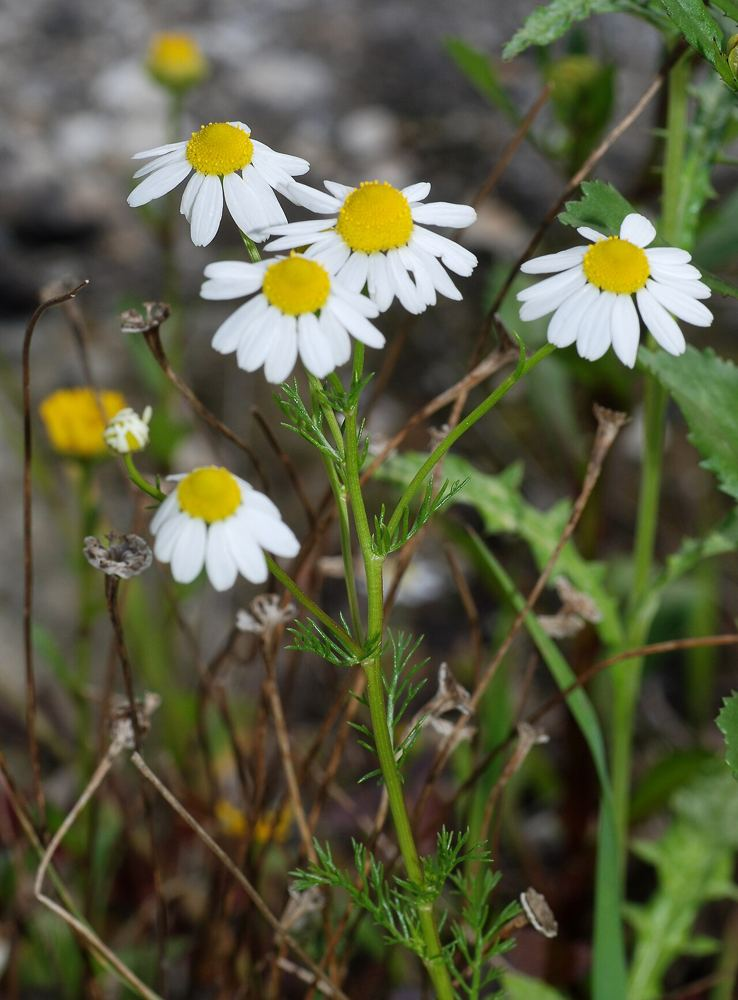
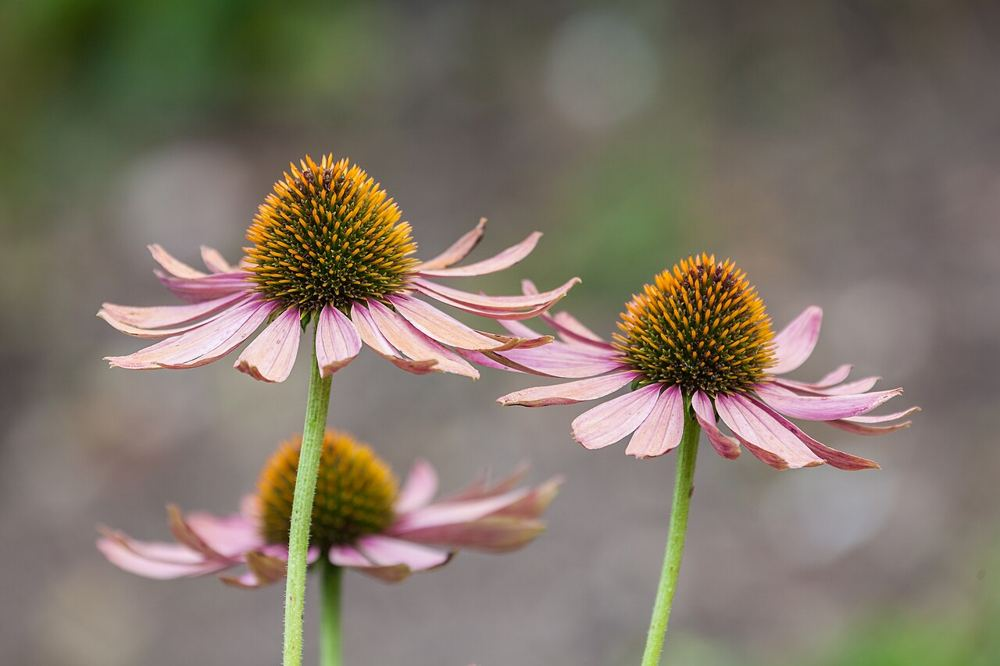
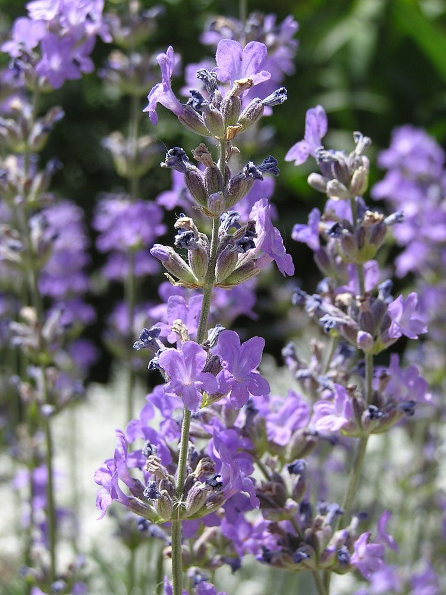
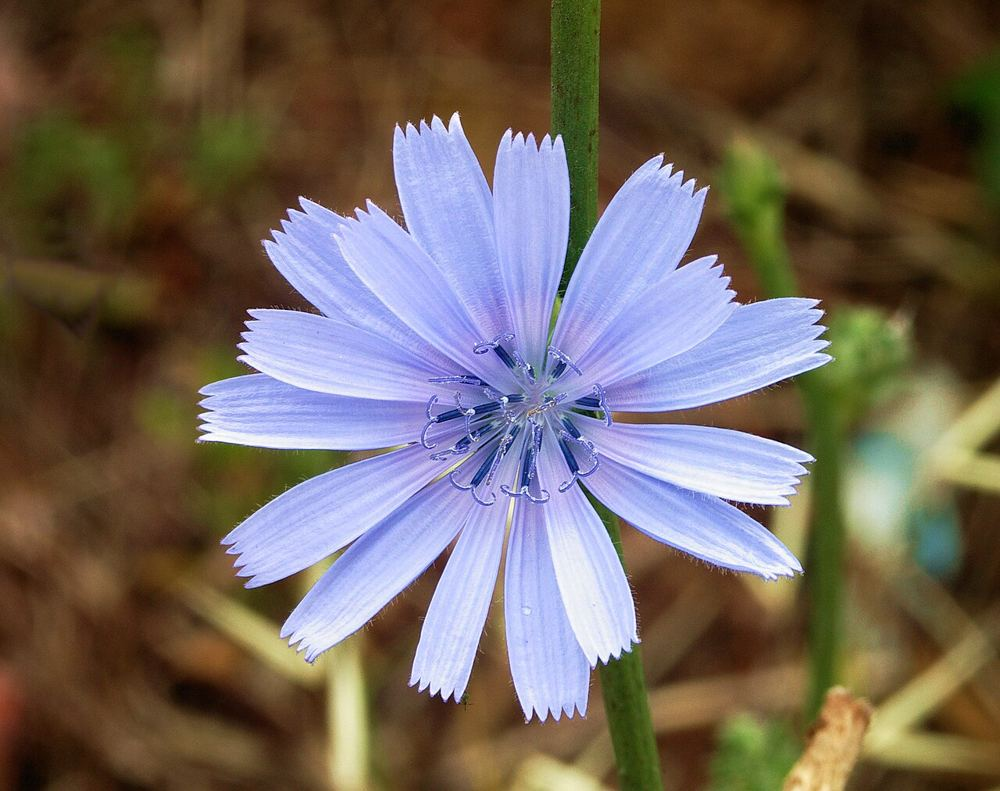
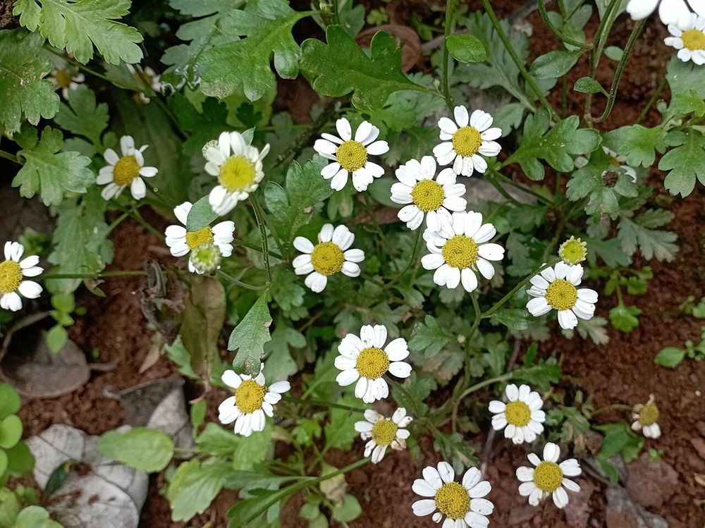
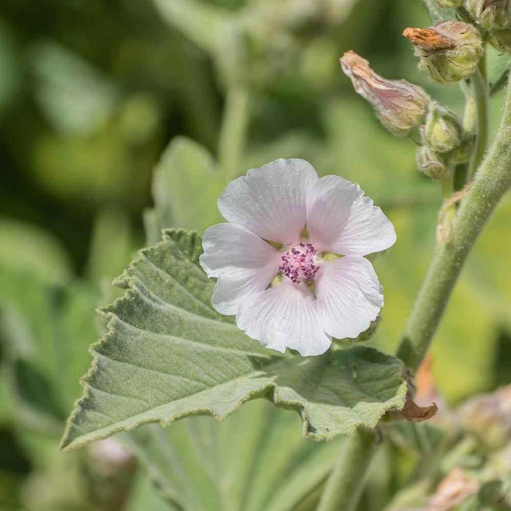

10 medicinal herbs you can grow from seed
A plain-English growing guide: when to sow, how deep, how long they take, and how to harvest and dry them. Ordered from easiest to most patient. New to growing from seed? Start with the growing basics. Printable version: free PDF.




Three things that trip people up
Some seeds need light
Chamomile, yarrow, feverfew, lavender and evening primrose germinate on the surface. Press them in; do not bury them.
Some need a fake winter
Echinacea, marshmallow and lavender sprout better after 2–4 weeks in a damp paper towel in the fridge — or sow them outdoors in autumn.
One hates moving
California poppy has a taproot. Sow it where it will grow; never transplant it.
The ten herbs
Calendula
The easiest one to start with: big curved seeds, fast flowers, and it blooms until frost.
Chamomile
Seeds as fine as dust, flowers in two months, and one of the oldest tea herbs in the world.
California poppy
Never transplant it — sow it where it will grow, and it will come back on its own.

Chicory
Sky-blue flowers that open in the morning and close by afternoon — and a root people once roasted like coffee.

Yarrow
Feathery leaves, flat white flower heads, and a plant that thrives on neglect.

Feverfew
Clouds of tiny white daisies with a sharp, bitter scent that many garden pests dislike.
Echinacea
The pink coneflower bees and goldfinches love — it needs a fake winter before it sprouts well.

Evening primrose
Its yellow flowers open at dusk fast enough to watch — and wilt by the next afternoon.

Marshmallow
Yes, the original marshmallow sweet was made from this plant’s root.
Lavender
The slowest one from seed — but one plant can live and flower for ten years or more.
When to sow what
Late winter, indoors
- Lavender — 10–12 weeks before last frost, after cold treatment
- Echinacea, marshmallow — 8–10 weeks, after cold treatment
- Yarrow, feverfew — 6–8 weeks
Early spring, outdoors
- Calendula
- Chamomile
- California poppy
- Chicory
- Evening primrose
Autumn, outdoors
- California poppy and chamomile (mild winters)
- Echinacea and marshmallow — winter does the cold treatment for you
- Evening primrose
Traditional uses on this site are history, not medical advice. Before using any herb, talk to a doctor or pharmacist — especially if you are pregnant, nursing, taking medication, or allergic to plants in the daisy family (Asteraceae), which includes seven of the ten herbs here.